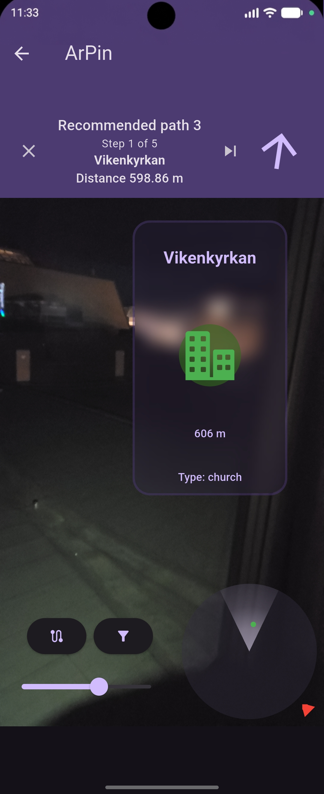
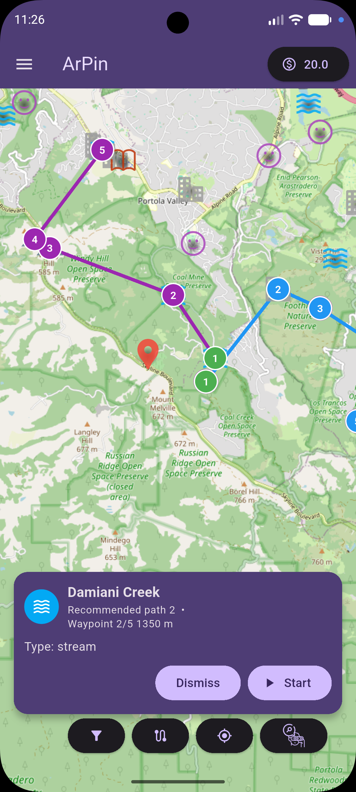
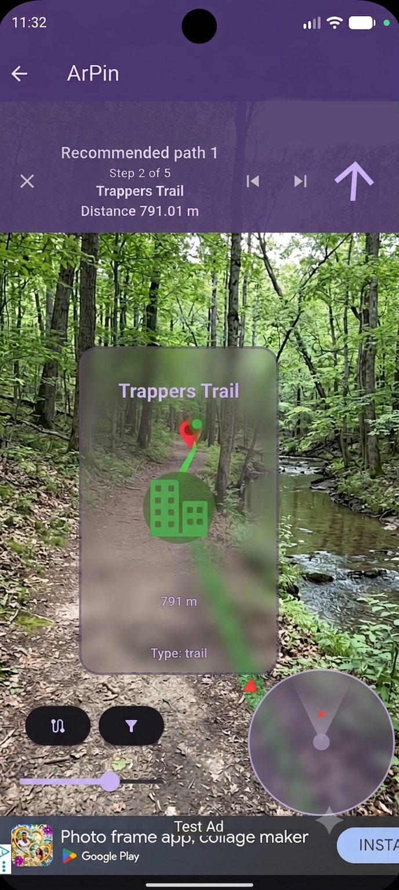
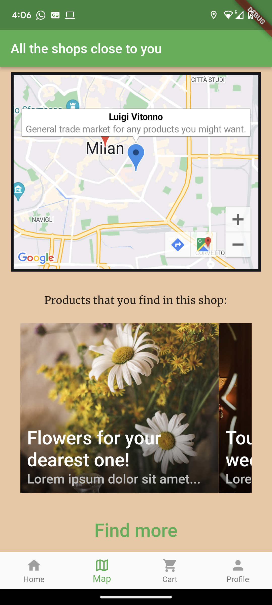
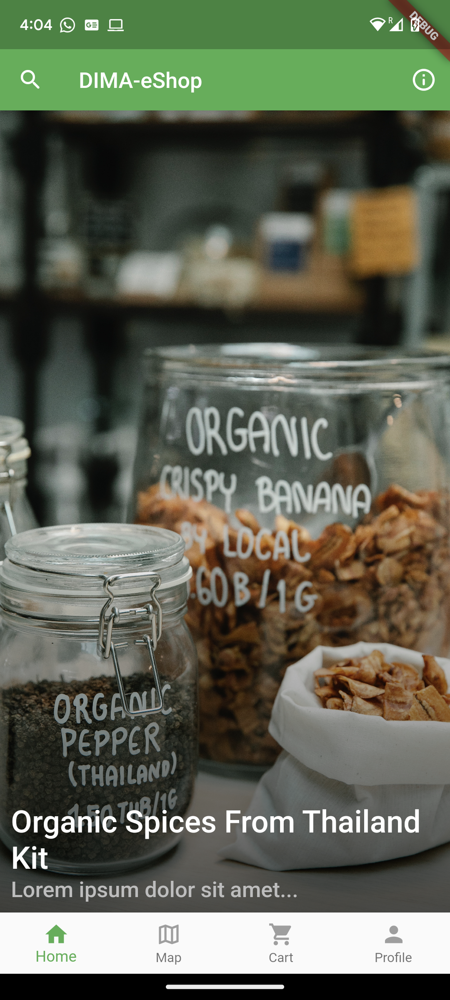
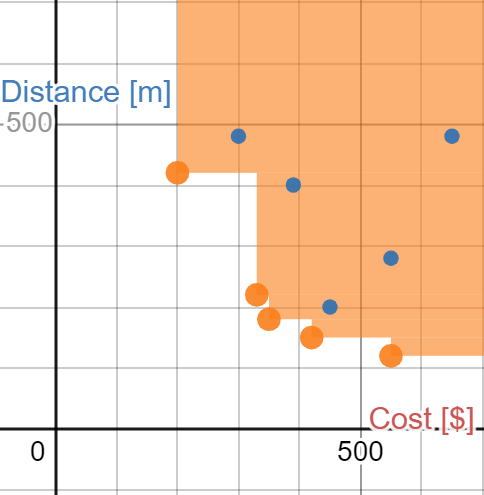
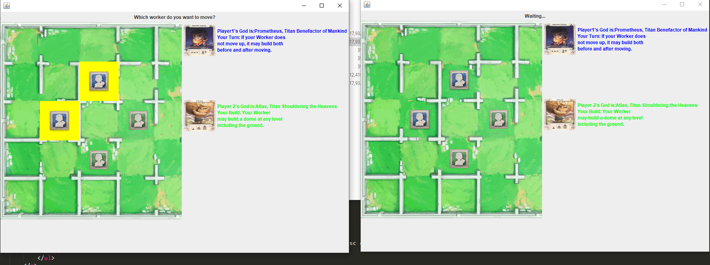
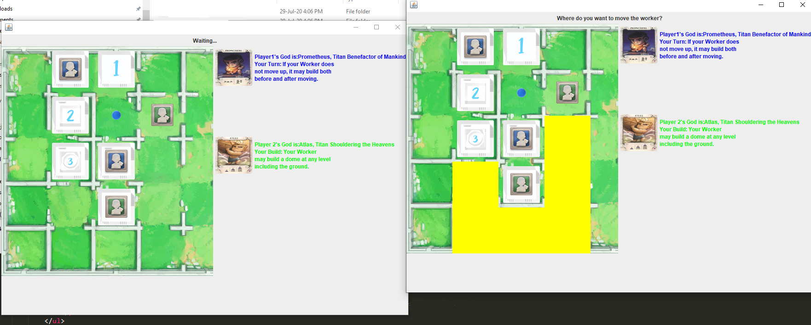

My name is Etion Pinari, a MSc graduate in Politecnico di Milano, in the field of Computer Engineering, currently
working as a software engineer.
I have had the pleasure of becoming experienced in many programming languages such as those of
application development, data sciences, and embedded systems.
hidden text
hidden text
Projects (Programming languages)
- Augmented Reality application development (Flutter, Dart, Google's Firebase, Stripe)
- "Popular Names DNA & Baby Names" application (Flutter, Dart, Google's Firebase, Stripe)
- Mobile application development (Flutter, Dart, Google's Firebase)
- Skyline Queries in Big Data application (Python, Spark)
- Website development (VueJS, NuxtJS, HTML, CSS)
- IoT device implementation (nesC, TinyOs, NodeRed, IFTTT)
- Webserver development (Eclipse, JavaEE, HTML, CSS)
- Online board game "Santorini" (Java)
- Electronic fast codifier with Working-Zone Protocol (VHDL)
- Fast Database-search algorithm (C)
I created a mobile application that shows points of interests (POI) to its users. This
allows
users to navigate while using the camera without the hassle of looking into a 2D map.
You can download the app and try it yourself: here



Ever wondered if your name sounds "young" or where in the world it's most popular?
I created a mobile application that uses Machine Learning to decode the characteristics behind any name.
The app predicts the likely gender, year of birth and ethnicity of a name with AI-powered insights,
shows exactly how many people were born with your name each year,
keeps you up to date with the "Top Trending Names" through global leaderboards,
and even maps your baby's desired personality to their name.
You can download the app and try it yourself: here
We created an e-commerce mobile application called "DIMA e-Shop" with a minimalistic
design
look
in which the main buying point is the picture of the product. The application sends
orders
and payments to a backend server. The code can be found in the following link.


For my thesis I had to implement a new faster algorithm to find Skyline queries in
Big Data
in
the fastest way possible. I designed a new method that would find the queries in
less than
half
the time of the fastest query ever designed until then.
The code can be viewed in the following link.

We had to document the implementation of a website and develop a fictitious ICT
company
called
Hatgemini. I was in charge of the back-end, employees and articles web-pages. All
the people
inside the website are fetched through an API and stored in the database.
Furthermore I had
to
implement the chatbot which provides an initial guidance to the structure of the
website.
Check
the documentation for more information in this link. The server is down and not in use anymore.
We designed and implemented a software prototype for a social distancing application. The software sends a notification to the owners' phones, after continous proximity to one-another. This project uses 'TinyOS' to create the IOT nodes and their payloads, requires Cooja to simulate (or any similar program) and finally uses Node-Red and IFTTT to communicate with mobile-phones. The GitHub repository can be found in this link.
We had to create a working Webserver to handle submissions of reviews of videogames
that the
user had played and creating a leaderboard with the top 10 games of all time.
The code can be found in the following link.
The
local server is down and not in use anymore.
As one of the last projects of bachelors degree we had to recreate a pre-existing
game
called
Santorini
in which
people take turns to move their workers and
build different levels of buildings. All this with the purpose of climbing up to the
third
floor
of a building as to win at the game.
The game is playable both in CLI-mode (Command Line Input) and GUI (Graphical User
Interface).
This was one of the most enjoyable projects that I have been part of.


Based on the
Working-Zone
Encoding Protocol, which saves on energy-consumption on microcomponents, we
had to
code
the electronic part which would take care of the encoding. This is all described
with great
detail in my VHDL repository although it is only in Italian.
For a brief description of how it worked, I implemented a finite state machine which
would
request from the
RAM-memory the data in all the adresses, and
would then find if the data belonged to one of the Working-Zones or not, flagging it
to the
RAM
and storing it as well.
The request was to store-delete and search accounts, and relationships between these
accounts,
with certain criterias (such as accounts with highest number of friends) in a timely
manner.
This individual project showed students why time-complexity and space in memory are
highly
important topics to tackle every time you build an algorithm.
The abstract data types I implemented to save all the information and get it
back in as
little time as possible were: "separate chaining hash-tables" to store the names of
accounts
as
well as